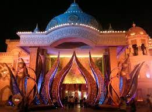
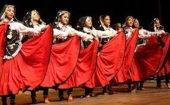

History of Haryana
Haryana, state in north-central India. It is bounded on the northwest by the state of Punjab and the union territory of Chandigarh, on the north and northeast by the states of Himachal Pradesh and Uttarakhand, on the east by the state of Uttar Pradesh and the union territory of Delhi, and on the south and southwest by the state of Rajasthan.
The city of Chandigarh, within the Chandigarh union territory, serves as the capital of not only that territory but also of the states of Haryana and Punjab.
Haryana was constituted on November 1, 1966, as a result of the partition of the former state of Punjab into two separate states—Punjabi-speaking Punjab and Hindi-speaking Haryana.
Mr. Shri Manohar Lal
Chief Minister Of Haryana
CULTURES
Haryana’s cultural life reflects both the seasonal rhythm of its agricultural economy and a treasure of traditions and legends with roots in ancient India. The boisterous spring festival of Holi is celebrated by people showering coloured powder (or coloured powder mixed with water) on each other, irrespective of age or social status.
Janmasthami, the birthday of Krishna (an incarnation of the god Vishnu), is of special religious importance in Haryana because it was on a battlefield at Kurukshetra that Krishna is said to have delivered to the warrior Arjuna the teachings contained in the Bhagavadgita (a part of the epic known as the Mahabharata).
Festivals in honour of other deities and saints are also an important element of the state’s cultural life, as are cattle fairs, which are held at a number of locations.
Khoria dance
The famous dance in haryana , India
FAMOUS PLACES:
Gurgaon

Kurukshetra

Panchkula

Faridabad

Panipat

Narnaul

Nuh

FESTIVLAS
Haryana is a state of great multicultural diversity. The state embraces festivals of all cultures, like Eid of the Muslims, Christmas and New Year of the Christians as well as Hindu festivals like Baisakhi, Rakhi and Holi.
- Holi
The festival of Holi is known as Dulandi Holi’ in Haryana. The tradition of breaking pots and playing with colour is celebrated here.
- Diwali
Deepavali is known as the Festival of Lights. This festival commemorates the killing of the demon Ravana by the king of Ayodhya, Ram.
- Lohri
Lohri is celebrated annually in the state of Haryana. It is held on the day of the Hindu festival of Makar Sankranti.
- Basant Panchami
Basant Panchami is a festival that is celebrated annually in Haryana. It welcomes spring with zest and celebrates the passing of winter.
- Gangore
The festival of Gangore is annually celebrated in the state of Haryana. It is celebrated in the months of March and April, or in the month of Chet Sudi-3 by the Punjabi calendar.
- Baisakhi
This festival marks the Hindu New Year. It is the beginning of the harvest season and is celebrated at the peak of summer.
- Teej
Teej is celebrated every year in the state of Haryana. The festivities are held on Sawan Sudi.